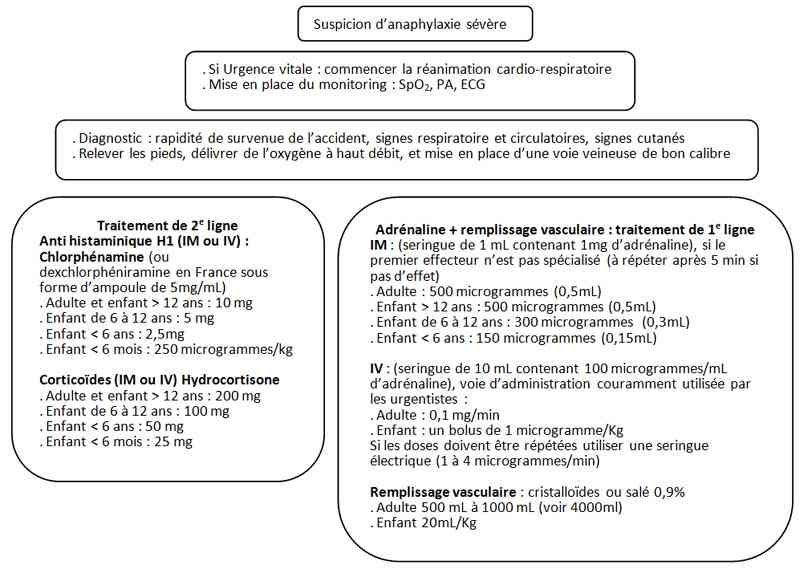

Bienvenue Sur Medical Education
Choc anaphylactique
Spécialité : pediatrie / système immunitaire /
Points importants
-
Manifestations immuno-allergiques provoquées par la libération de médiateurs pro-inflammatoires (histamine, prostaglandines, leucotriènes...) entrainant vasodilatation puis collapsus/oedème et bronchospasme
-
1% des passages aux Urgences
-
Mortalité = 0,65 à 2%
-
Surmortalité si :
-
ATCD d'asthme
-
patient sous bêtabloquants
-
inhibiteurs de l'enzyme de conversion ou du récepteur à l'angiotensine
-
cardiopathie
-
Traitement de 1re ligne = adrénaline même en l'absence d'HoTA
-
Eviter solutés de remplissage allergisants (Plasmion®, dextran)
Présentation clinique / CIMU
SIGNES FONCTIONNELS
- ATCD d'asthme
- patient sous bêtabloquants
- inhibiteurs de l'enzyme de conversion ou du récepteur à l'angiotensine
- cardiopathie
Présentation clinique / CIMU
SIGNES FONCTIONNELS
Généraux
- Angoisse
- Malaise avec perte de connaissance
- Bouffées de chaleur
Spécifiques
-
Cutanés et muqueux :
- rash urticarien
- prurit (picotements du nez, des yeux, du pharynx, des parties génitales, des paumes des mains et plantes des pieds)
- Dyspnée avec bradypnée inspiratoire (oedème laryngé) ou expiratoire (bronchospasme), toux sèche
-
ORL :
- rhinorrhée
- modification de la voix
- gout métallique dans la bouche
-
Digestifs :
- nausée, vomissements
- diarrhée
- douleur abdominale
- ballonnement abdominal
-
Neurologiques :
- sensation vertigineuse
- céphalées
- Sensation de mort imminente
CONTEXTE
Antécédents
-
Allergie : médicamenteuse et produits dérivés du sang, alimentaire, au venin d’hyménoptères, aux pneumallergènes
-
Asthme
-
Choc anaphylactique
Facteurs de risque de gtavité
-
Asthme
-
Traitement par bétabloquants, inhibiteurs de l'enzyme de conversion ou du récepteur à l'angiotensine
-
Cardiopathie
Evolution des signes
- 5 à 30 min après le contact allergénique
- Rapidité de survenue = réaction sévère
- Réaction bi-phasique : 20% des anaphylaxies, réapparition des symptômes sans contact allergénique en 1 à 8 heures et persistent pendant 5 à 32h
EXAMEN CLINIQUE
Recherche
- Erythème, urticaire généralisé
- Œdème de Quincke (face, luette, cou, langue, mains)
- Hypersécrétion nasale et lacrymale
- Sueurs
- Tirage inspiratoire
- Chaleur cutanée
- Chute de la PA, différentielle élargie, tachycardie
- Pas de signe d'insuffisance cardiaque droite ou gauche
- Râles sibilants (bronchospasme), ronchi d'hypersécrétion
- Signes septiques éventuels à rechercher
Le diagnostic d'anaphylaxie est hautement probable quand au moins un des 3 critères est confirmé
-
Critère 1 :
- survenue brutale (minutes ou quelques heures) de signes pathologiques impliquant la peau et/ou les muqueuses (urticaire, prurit ou érythème, oedème des lèvres ou de la langue ou de la luette).
-
associé à au moins un des signes suivants :
-
troubles respiratoires :
- dyspnée
- bronchospasme
- stridor
- diminution du débit expiratoire de pointe
- hypoxie
- diminution de la PAS (< 90 mmHg) ou signes témoignant d'une dysfonction d'organe (hypotonie, syncope, incontinence)
-
troubles respiratoires :
-
Critère 2 : deux ou plusieurs signes après exposition à un probable allergène :
-
atteinte cutanée et ou muqueuse :
- urticaire, prurit ou érythème
- oedème des lèvres ou de la langue ou de la luette
-
troubles respiratoires :
- dyspnée
- bronchospasme
- stridor
- diminution du débit expiratoire de pointe
- hypoxie
- baisse de la PAS < 90mmHg ou une chute de plus de 30% par rapport à la PAS de base chez l'adulte ou signes témoignant d'une dysfonction d'organe (hypotonie, syncope, incontinence)
- troubles gastro-intestinaux persistants (douleur abdominale, vomissements)
-
atteinte cutanée et ou muqueuse :
-
Critère 3 :
- baisse de la PAS < 90mmHg ou une chute de plus de 30% par rapport à la PAS de base chez l'adulte après exposition à un allergène connu
- chez l'enfant une chute de la PAS est définie si : PAS < 70 mmHg de 1 mois à 1 an, moins de (70 mmHg + [2 x âge]) de 1 an à 10 ans, < 90mmHg de 11 ans à 17 ans.
EXAMENS PARACLINIQUES SIMPLES
- ECG systématique (tachycardie sinusale) ECG : troubles du rythme ou signes d'ischémie coronarienne
- SpO2
CIMU
-
Tri 1
Signes paracliniques
BIOLOGIQUE
-
Seul examen biologique recommandé tryptase sérique :
-
tryptase détectée à partir de la 30e minute de la réaction clinique avec un pic à 1-2 heures ; normalisation entre 6e et 8e heure
-
confirme l'anaphylaxie
-
intérêt diagnostique en cas d'arrêt cardiaque
-
idéal : 3 prélèvements, T1 = après la mise en route du traitement d'urgence, T2 = 1 à 2 heures après T1 et T3 à la 24e heure dans le service d'hospitalisation
-
prélèvements congelés à -20°C
-
Les autres examens seront demandés en fonction de l'état clinique du patient (gaz du sang, ionogramme, coagulation, NFS)
IMAGERIE
-
Radio du thorax si bronchospasme avec risque de pneumothorax ou de pneumomédiastin
Diagnostic étiologique
-
L'histoire clinique doit être consignée dans le dossier médical avec facteur déclenchant, délai entre le contact et les symptômes
- tryptase détectée à partir de la 30e minute de la réaction clinique avec un pic à 1-2 heures ; normalisation entre 6e et 8e heure
- confirme l'anaphylaxie
- intérêt diagnostique en cas d'arrêt cardiaque
- idéal : 3 prélèvements, T1 = après la mise en route du traitement d'urgence, T2 = 1 à 2 heures après T1 et T3 à la 24e heure dans le service d'hospitalisation
- prélèvements congelés à -20°C
Diagnostic étiologique
- L'histoire clinique doit être consignée dans le dossier médical avec facteur déclenchant, délai entre le contact et les symptômes
Allergènes avec mécanisme IgE-dépendant
-
Aliments :
- arachide
- noix d'arbre
- fruits de mer
- poissons
- lait
- oeuf
- soja
- blé
- tout aliment
-
Médicaments :
- antibiotiques
- antalgiques et AINS
- curares
- anesthésiques généraux
- anesthésiques locaux
- tout médicament
- Venins d'hyménoptères
- Latex, désensibilisation, protéines humaines et animales (sérothérapie), colorants, enzymes, polysaccharides
Mécanisme immunologique non IgE-dépendant
- Transfusion
- Immunoglobulines IV
- Dextran
Mécanisme non immunologique
- Produits de contraste iodés
- Protamine
- Ethylène oxyde (dialysés)
- IEC
- Opiacés
- Facteurs physiques (exercice, température)
Idiopathique
Diagnostic différentiel
-
Angio-oedème héréditaire
-
Choc septique, cardiogénique, hypovolémique
-
Réaction vasovagale
-
Mastocytose
-
Syndrome carcinoïde
-
Hyperventilation
-
Conversion
-
Intoxication scromboïde
Traitement
TRAITEMENT PREHOSPITALIER / INTRAHOSPITALIER
Traitement
TRAITEMENT PREHOSPITALIER / INTRAHOSPITALIER
Stabilisation initiale
- Eviction de l'allergène (perfusion, transfusion...)
- 2 voies veineuses périphériques
- Remplissage par cristalloïdes
- Décubitus dorsal jambes surélevées en l'absence de dyspnée ou position en « hamac »
- O2 fonction de la SpO2, 6 à 8 L/min
- Si troubles de conscience : sédation, intubation + ventilation contrôlée
MEDICAMENTS
Traitement de 1re ligne
Adrénaline + remplissage
- IM : dilution au 1/1000 (seringue de 1 ml contenant 1mg d’adrénaline), cette voie d’administration doit être préconisée en l’absence d’abord veineux. L’injection est réalisée au niveau la face médio antérolatérale de la cuisse. La dose est de 0,01 mg/kg avec une dose maximale de 0,5 mg chez l’adulte et 0,3 mg chez l’enfant à répéter toutes 5 à 10 minute
- IV : dilution au 1/10000 (seringue de 10 ml contenant 100 microgrammes/ml d’adrénaline)
-
Voie d’administration couramment utilisée par les urgentistes :
- adulte : un bolus de 50 microgrammes (0,5 ml)
- enfant : un bolus de 1 microgramme/kg
- Si les doses doivent se répéter utiliser une seringue électrique (1 à 4 microgrammes/min).
- Remplissage vasculaire : cristalloïdes ou salé 0,9%, adulte 5 à 10 ml/kg au cours de 5 premières minutes, enfant 30 ml/kg dans la première heure.
Traitement de 2e ligne
-
Anti histaminique H1 (IM ou IV) : (dexchlorphéniramine en France sous forme d’ampoule de 5 mg/ml)
- adulte et enfant > 12 ans : 10 mg
- enfant de 6 à 12 ans : 5 mg
- enfant < 6 ans : 2,5 mg
- enfant < 6 mois : 250 microgrammes/kg
-
Corticoïdes (IM ou IV)
- hydrocortisone
- adulte et enfant > 12 ans : 200 mg
- enfant de 6 à 12 ans : 100 mg
- enfant < 6 ans : 50 mg
- enfant < 6 mois : 25 mg
- solumédrol : 1mg/kg en IV
Nébulisation de Ventoline® (5 mg) ou Bricanyl® (5 mg) + Corticoïdes si bronchospasme
Cas particulier : patient sous bêtabloquants
- Glucagon 1-2 mg en bolus IV à répéter toutes les 5 min jusqu'à normalisation de la PA puis IVSE 5-15 µg/min
Surveillance
CLINIQUE
-
Conscience, PA, FC, SpO2, scope, dyspnée (FR)
-
Disparition des signes cutanés et respiratoires, normalisation de la PA si état de choc
-
Surveillance de 4 à 8 heures à cause des réactions bi-phasiques
Devenir / orientation
CRITERES D'ADMISSION
-
Hospitalisation systématique en réanimation ou Unité de Soins Continus en fonction de la gravité
CRITERES DE SORTIE
-
Si absence de choc initial et après plusieurs heures de surveillance (phénomène biphasique possible)
ORDONNANCE DE SORTIE
-
Education :
-
allergène en cause et l'éviter
-
reconnaitre les premiers signes d'anaphylaxie
-
savoir utiliser l'adrénaline auto-injectable
-
Ordonnance d'adrénaline auto-injectable :
-
anaphylaxie idiopathique
-
patients à haut risque de récidive (allergie alimentaire, allergie au venin d'hyménoptères)
-
deux types par voie IM au niveau de la cuisse :
-
Epipen Jr® 0,15 ou 0,3 mg
-
Twinject® 0,15 ou 0,3 mg
-
dosage 0,15 mg pour enfant avec poids de 10-25 kg, 0,3 mg pour poids de 25 kg ou plus
-
Ordonnance d'antihistaminiques (cétirizine 1cp le soir) et de corticoïdes (prednisone 40 à 60 mg/j) pour 1 semaine
Mécanisme / description
-
IgE-dépendant : portage des récepteurs des IgE allergène (mastocytes et basophiles) = dégranulation = libération des médiateurs. Terrain allergique = production d'IgE spécifiques qui fixent les récepteurs
-
Non IgE-dépendant : autres mécanismes d'hypersensibilité (type II = IgG, Type III = complexes immuns)
-
Non immunologique : activation de la cascade du complément, dégranulation par action directe sur la membrane cellulaire
-
Manifestations cliniques liées à l'action des médiateurs sur les vaisseaux (vasodilatation, HoTA), coeur (ischémie coronarienne, dépression myocardique), bronches (bronchospasme), tube digestif (douleurs abdominales, diarrhées), peau et muqueuses (oedème, urticaire)
Algorithme
-
Algorithme : prise en charge de l'anaphylaxie
Devenir / orientation
CRITERES D'ADMISSION
- Hospitalisation systématique en réanimation ou Unité de Soins Continus en fonction de la gravité
CRITERES DE SORTIE
- Si absence de choc initial et après plusieurs heures de surveillance (phénomène biphasique possible)
ORDONNANCE DE SORTIE
-
Education :
- allergène en cause et l'éviter
- reconnaitre les premiers signes d'anaphylaxie
- savoir utiliser l'adrénaline auto-injectable
-
Ordonnance d'adrénaline auto-injectable :
- anaphylaxie idiopathique
- patients à haut risque de récidive (allergie alimentaire, allergie au venin d'hyménoptères)
-
deux types par voie IM au niveau de la cuisse :
- Epipen Jr® 0,15 ou 0,3 mg
- Twinject® 0,15 ou 0,3 mg
- dosage 0,15 mg pour enfant avec poids de 10-25 kg, 0,3 mg pour poids de 25 kg ou plus
-
Ordonnance d'antihistaminiques (cétirizine 1cp le soir) et de corticoïdes (prednisone 40 à 60 mg/j) pour 1 semaine
Mécanisme / description
-
IgE-dépendant : portage des récepteurs des IgE allergène (mastocytes et basophiles) = dégranulation = libération des médiateurs. Terrain allergique = production d'IgE spécifiques qui fixent les récepteurs
-
Non IgE-dépendant : autres mécanismes d'hypersensibilité (type II = IgG, Type III = complexes immuns)
-
Non immunologique : activation de la cascade du complément, dégranulation par action directe sur la membrane cellulaire
-
Manifestations cliniques liées à l'action des médiateurs sur les vaisseaux (vasodilatation, HoTA), coeur (ischémie coronarienne, dépression myocardique), bronches (bronchospasme), tube digestif (douleurs abdominales, diarrhées), peau et muqueuses (oedème, urticaire)
Algorithme
-
Algorithme : prise en charge de l'anaphylaxie
Algorithme
- Algorithme : prise en charge de l'anaphylaxie
 _765 Algorithme Algorithme : prise en charge de l'anaphylaxie
Bibliographie
-
Jasmeet S, Pumphrey R, Cant A, Clarke S, Corbett A et al. Emergency treatment of anaphylactic reactions-Guidelines for healthcare providers. Resuscitation 2008; 77:157-169
-
Part 10.6: Anaphylaxis. Circulation 2005; 112:143-145
-
Sampson HA, Munoz-Furlong A, Campbell RA, Franklin Adkinsob N, Allan Bock S et al. Second symposium on the definition and management of anaphylaxis: Summary report-Second National Institute of Allergy and Infectious Disease/Food Allergy and Anaphylaxis Network symposium. J Allergy Clin Immunol 2006; 117:391-7)
-
Kemp SF, Lockey RF, Simons FER. Epinephrine: the drug of choice for anaphylaxis. A statement of the World Allergy Organization. Allergy 2008; 63:1061-1070
-
P Plaisance, Urgences vitales 3e ed. 2008, ESTEM
Auteur(s) : Abdelouahab BELLOU